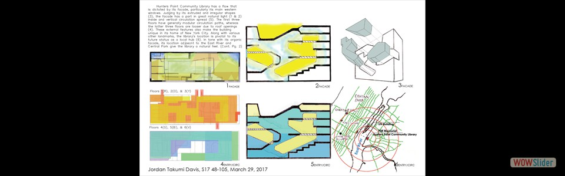
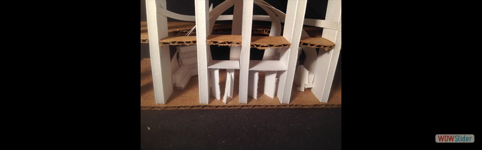

- To prepare for altering Hunt Library in CMU


 To analyze and improve upon current nuances and features of Hunt Library
To analyze and improve upon current nuances and features of Hunt Library- 

 To suggest changes to Hunt Library to improve its atmosphere and spatial qualities
To suggest changes to Hunt Library to improve its atmosphere and spatial qualities


 1
1 2
2 5
5 8
8 13
13bootstrap slider by WOWSlider.com v8.7
To analyze and improve upon current nuances and features of Hunt LibraryTo suggest changes to Hunt Library to improve its atmosphere and spatial qualitiesHTML code for the slider C:/Users/Takumi/Desktop/CMU Courses/Spring 2017/Media II/Portfolio5/Day 4-6/TruePortfolio2/PortfolioSlide8Page1.html
Click here for the detailed info.